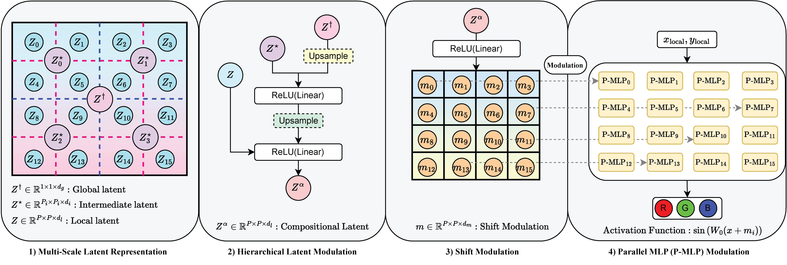
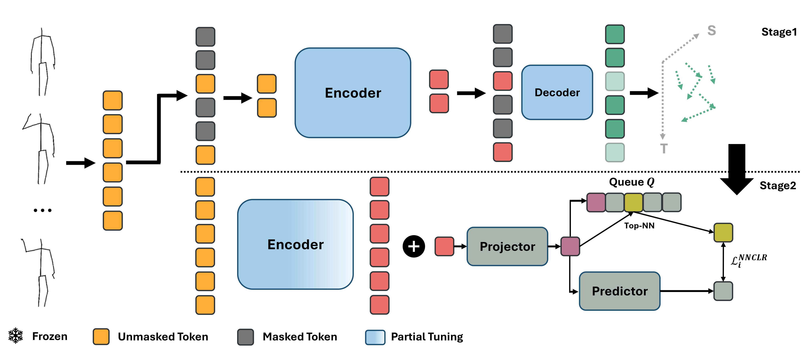
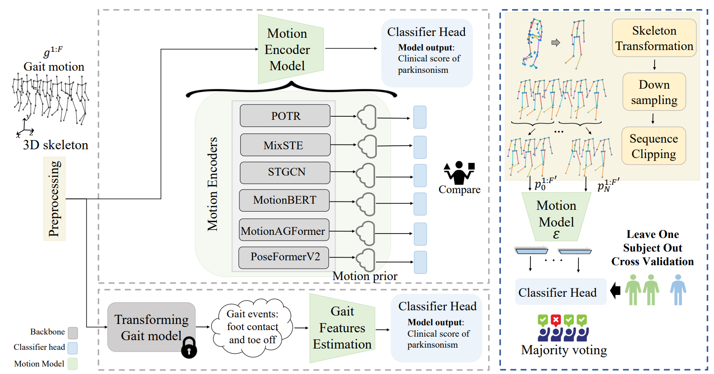

|
Soroush Mehraban I'm a third-year PhD student at University of Toronto, advised by Dr. Babak Taati , and Faculty Affiliate Researcher at Vector institute . My research focuses on analyzing videos for human motion analysis including 3D human pose estimation, 3D human mesh recovery, action recognition, and gait assessment. I'm currently doing an internship in Pickford AI, focusing on video style transferring. Email / CV / Scholar / Twitter / Linkedin / YouTube / Github |
{kind=link}
ResearchI'm interested in computer vision, Self-supervised learning, generative models, and their application to a range of problems. Currently I'm focusing on 3D human pose/mesh estimation from monocular videos. Some of my works are mentioned below. |

|
Token Perturbation Guidance for Diffusion Models
Mohammad Javad Rajabi, Soroush Mehraban, Seyedmorteza Sadat, Babak Taati arXiv GitHub / arXiv A simple yet effective method based on token shuffling for extending the benefits of CFG to broader settings, including unconditional generation. |
|  |
LIFT: Latent Implicit Functions for Task- and Data-Agnostic Encoding
Amirhossein Kazerouni, Soroush Mehraban, Michael Brudno, Babak Taati ICCV 2025 project page / arXiv LIFT enables unified implicit neural representations across diverse tasks by leveraging localized implicit functions and a hierarchical latent generator. |
|
GAITGen: Disentangled Motion-Pathology Impaired Gait Generative Model
Vida Adeli, Soroush Mehraban, Majid Mirmehdi, Alan Whone, Benjamin Filtjens, Amirhossein Dadashzadeh, Alfonso Fasano, Andrea Iaboni, Babak Taati arXiv project page / arXiv GAITGen is a generative framework that synthesizes realistic gait sequences conditioned on Parkinson’s severity. Using a Conditional Residual VQ-VAE and tailored Transformers, it disentangles motion and pathology features to produce clinically meaningful gait data. GAITGen enhances dataset diversity and improves performance in parkinsonian gait analysis tasks. |
|
|  |
STARS: Self-supervised 3D Action Recognition with Contrastive Tuning
Soroush Mehraban, Mohammad Javad Rajabi, Babak Taati arXiv project page / arXiv STARS enhances the Mask Autoencoder (MAE) approach in self-supervised learning by applying contrastive tuning. We also show that MAE approaches fail in few-shot settings and achieve improved performance by using the proposed method. |
|  |
Benchmarking Skeleton-based Motion Encoder Models for Clinical
Applications: Estimating Parkinson's Disease Severity in Walking Sequences
Vida Adeli, Soroush Mehraban, Irene Ballester, Yasamin Zarghami, Andrea Sabo, Andrea Iaboni, Babak Taati FG, 2024 Code / arXiv Evaluating recent motion encoders for the task of parkinsonism severity estimation (UPDRS III gait) |

|
MotionAGFormer: Enhancing 3D Pose Estimation with a Transformer-GCNFormer
Network
Soroush Mehraban Vida Adeli, Babak Taati WACV, 2024 Code / video / arXiv Estimating 3D locations of 17 main joints from a monocular video. |
|
|